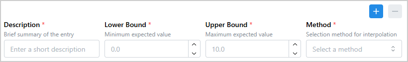
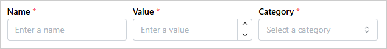
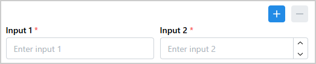

Input Row Array#
InputRowArray is a Dash All-in-One (AIO) component that creates a set of input fields arranged
in a row. Optionally, a “multiple rows mode” can be enabled, which allows users to capture multiple
sets of input values within a single form. When multiple rows are enabled, buttons are displayed for
adding and deleting rows.
Key features:
Multiple input types: Supports
TextInput,NumberInput, andSelectfieldsDynamic row management: Optional add and delete buttons to manage multiple rows at runtime
Pattern-matching callbacks: Uses Dash pattern-matching IDs for easy data retrieval
Flexible configuration: Each field is independently configurable via a properties dictionary

Usage#
Basic usage#
Import InputRowArray:
from ansys.solutions.dash_super_components import InputRowArray
Define the items and add InputRowArray to the page layout:
def layout():
items = [
{
"id": "input_1",
"type": "TextInput",
"properties": {
"label": "Name",
"placeholder": "Enter a name",
},
},
{
"id": "input_2",
"type": "NumberInput",
"properties": {
"label": "Value",
"placeholder": "Enter a value",
"min": 0,
"max": 100,
},
},
{
"id": "input_3",
"type": "Select",
"properties": {
"label": "Category",
"placeholder": "Select a category",
"data": ["Option A", "Option B", "Option C"],
},
},
]
return html.Div(
[
InputRowArray(
items=items,
aio_id="basic-array",
)
]
)
The following output is expected:

Advanced usage#
Enable multiple rows so that users can add rows at runtime. When only one row is
left, the delete button is disabled. You can also use the full_width parameter
to control whether the row stretches to the width of its parent container or keeps its base width:
def advanced_layout():
items = [
{
"id": "input_1",
"type": "TextInput",
"properties": {
"label": "Input 1",
"placeholder": "Enter input 1",
},
},
{
"id": "input_2",
"type": "NumberInput",
"properties": {
"label": "Input 2",
"placeholder": "Enter input 2",
"min": 0,
"max": 100,
"step": 1,
},
},
]
return html.Div(
[
InputRowArray(
items=items,
enable_multiple_rows=True,
aio_id="multi-row-array",
full_width=True,
),
],
style={"width": "500px"},
)
The following output is expected:

Retrieve input values#
Use the ids.input(aio_id, item_id, row_index) ID to retrieve input values in a callback. See the
Component IDs section for more details on the component IDs.
With the ALL pattern-matching wildcard, you can retrieve values from all rows or all fields
simultaneously. For example, to retrieve values from all fields in all rows when a button is
clicked, use the following callback:
from dash_extensions.enrich import ALL
@callback(
Output("all-inputs-output", "children"),
Input("get-all-inputs-button", "n_clicks"),
State(InputRowArray.ids.input("multi-row-array", ALL, ALL), "value"),
prevent_initial_call=True,
)
def collect_values(n_clicks, values):
"""Collect values from all rows of the InputRowArray."""
if n_clicks:
return str(values)
raise PreventUpdate
The resulting output for a sample input might look like this:
['Row 1 value', 42, 'Row 2 value', 99, 'Row 3 value', 100]
To retrieve values from a specific row, use the row_index key in the ID:
@callback(
Output("first-row-output", "children"),
Input("get-first-row-inputs-button", "n_clicks"),
State(InputRowArray.ids.input("multi-row-array", ALL, 0), "value"),
prevent_initial_call=True,
)
def collect_first_row_values(n_clicks, values):
"""Collect values from the first row of the InputRowArray."""
if n_clicks:
return str(values)
raise PreventUpdate
The resulting output for a sample input might look like this:
['Row 1 value', 42]
To retrieve values from a specific field across all rows, use the item_id key in the ID:
@callback(
Output("input-1-values-output", "children"),
Input("get-input-1-values-button", "n_clicks"),
State(InputRowArray.ids.input("multi-row-array", "input_1", ALL), "value"),
prevent_initial_call=True,
)
def collect_input_1_values(n_clicks, values):
"""Collect values from the input_1 field across all rows of the InputRowArray."""
if n_clicks:
return str(values)
raise PreventUpdate
The resulting output for a sample input might look like this:
['Row 1 value', 'Row 2 value', 'Row 3 value']
How it works#
Initialization: The component is initialized with an
itemslist that describes each field in a row, including its type and properties.Row rendering: The first row is rendered immediately. When
enable_multiple_rowsisTrue, add and delete buttons are displayed at the top of the component.Adding rows: Clicking the add button appends a new row using the same
itemslist. Each field in the new row receives a uniquerow_indexbased on the row number.Deleting rows: Clicking the delete button removes the last row. If only one row remains, it is cleared but the row container is kept.
Retrieving values: Use
InputRowArray.ids.input(aio_id, item_id, row_index)in aStateorInputto retrieve input values. The ID’sitem_idkey corresponds to the field’sidfrom theitemslist, and therow_indexkey indicates the row.
Properties#
Items definition#
Key |
Description |
Type |
Required |
|---|---|---|---|
id |
A unique identifier of the field across all rows. |
string |
Yes |
type |
The input type: “TextInput”, “NumberInput”, or “Select”. |
string |
Yes |
properties |
The properties of the field. |
dict |
Yes |
Constructor parameters#
Name |
Description |
Type |
Required |
|---|---|---|---|
items |
A list of field definitions. See Items definition. |
list |
Yes |
enable_multiple_rows |
When |
bool |
No |
full_width |
When |
bool |
No |
aio_id |
A unique identifier for the component. If not provided, a UUID is generated. |
string |
No |
Component IDs#
The component exposes the following IDs for use in callbacks:
InputRowArray.ids.rows(aio_id): The container holding all rendered rows. Use itschildrenproperty in aStateto retrieve row data.InputRowArray.ids.add_button(aio_id): The button that adds a new row. Only present whenenable_multiple_rows=True.InputRowArray.ids.delete_button(aio_id): The button that removes the last row. Only present whenenable_multiple_rows=True.InputRowArray.ids.input(aio_id, item_id, row_index): An individual input field, whereitem_idis the item id (item["id"]) androw_indexis the zero-based row number. For single-row mode, the row index can be omitted and defaults to0:InputRowArray.ids.input(aio_id, item_id).
Full example#
Check out this example
to learn how to use InputRowArray.
The example demonstrates:
A minimal single-row array with
TextInput,NumberInput, andSelectinputs configured with only the required propertiesA single-row array with detailed item configuration: description hints, unit suffixes, decimal scale, step size, and a searchable and clearable select
A dynamic multi-row array with row addition and deletion, and callbacks reading all values for a specific input across all rows and all inputs from a specific row using
InputRowArray.ids.input()withALLpattern-matching wildcards
For a minimal self-contained runnable example, see the Input Row Array page in the Examples gallery.
Source code#
For the full API reference of InputRowArray, see
InputRowArray.
Check out the component source code to discover the underlying logic. Contributions are welcomed. You can extend the component functionalities by raising a pull request in the super-components-for-dash repository.